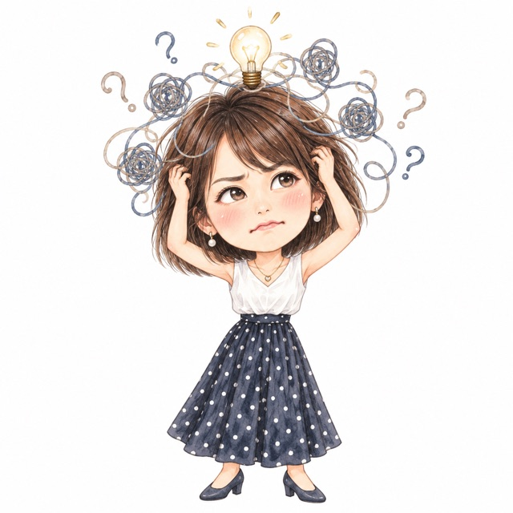
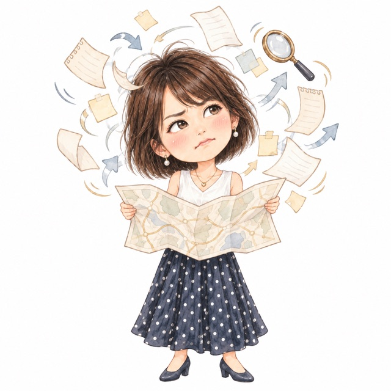
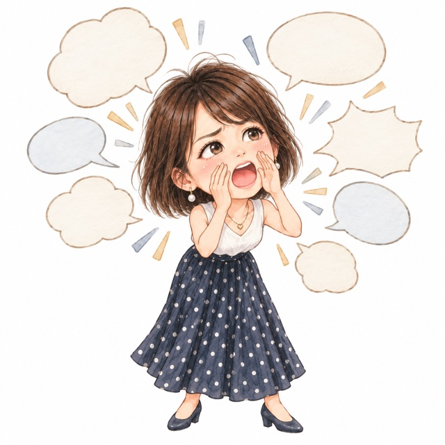
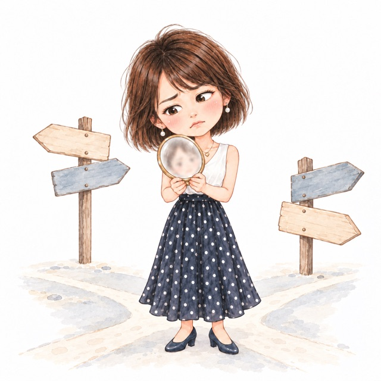
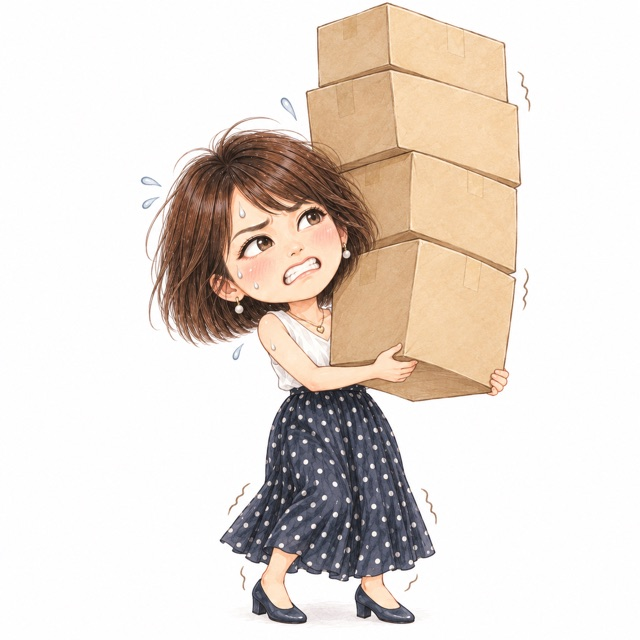
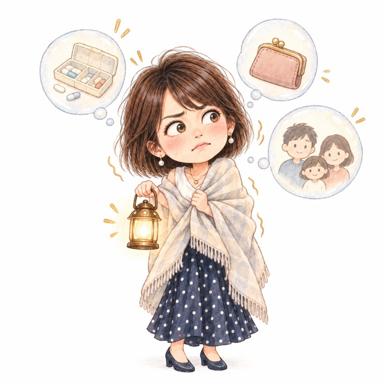
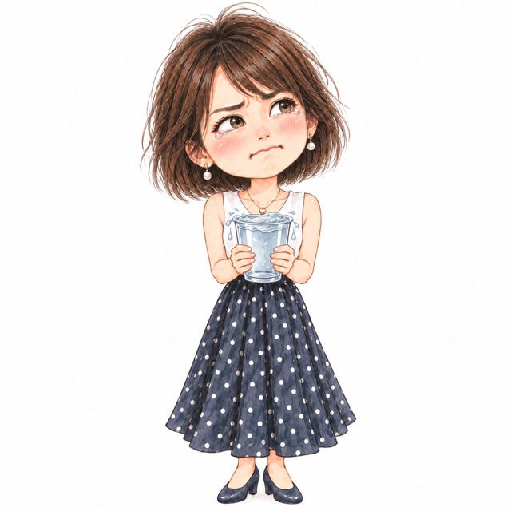
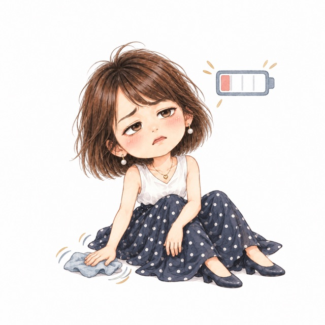
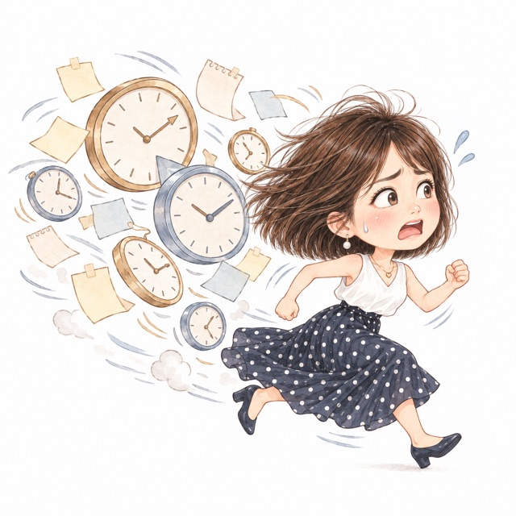

有些累，睡一覺就好。有些累，你躺了一整個週末，星期一早上身體還是沉的。
你可能也遇過這些時候：聚會上你精神很好，一回到家整個人倒在沙發上；主管只是語氣重了一點，你一整天都放不下；答應別人的事明明做完了，心裡還是覺得做得不夠。
人類圖把這些感受放在九個能量中心裡看。你找到是哪一個中心在累，就知道可以從哪裡開始照顧自己。
撰寫這篇文章的 Molly，在醫學中心手術室工作了 25 年，2026 年退休後全心投入身心陪伴工作。她把人類圖翻譯成你聽得懂、用得上的語言，陪你看懂自己現在卡在哪裡。
九大中心是什麼？
人類圖的身體圖上有九個幾何圖形，每一個就是一個能量中心。它們各管生命裡的一件事：思考、表達、方向、自我價值、身體本能、情緒、生命力和時間的壓力。（還不熟悉人類圖的話，可以先看〈人類圖是什麼？〉）
每個中心會是兩種狀態之一：
⬛ 有定義（有顏色）：這個中心有固定的運作方式，是你可以依靠的穩定能量。
⬜ 空白（白色）：這個中心沒有固定的運作方式，會接收並放大身邊人的能量。
空白中心接收到的能量會被放大，所以你感受到的，常常比對方本人還強烈。你在這裡特別敏銳，也最容易在這裡把自己用壞。
九個中心，分成五種功能
| 功能 | 中心 | 白話說 |
|---|---|---|
| 壓力中心 | 頭頂、根部 | 推你去想、推你去做的壓力 |
| 察覺中心 | 邏輯、直覺、情緒 | 你感覺、理解這個世界的方式 |
| 動力中心 | 薦骨、意志力、情緒、根部 | 身體裡的電池 |
| 顯化中心 | 喉嚨 | 把能量說出來、做出來的出口 |
| 定位中心 | G 中心 | 你是誰、要往哪裡走 |
情緒中心和根部中心各有兩種功能，所以會出現在兩列。
九個中心，一個一個看

1. 頭頂中心：一盞關不掉的燈
管的是：思考的壓力。它推著你去想問題，答案要交給下面的中心去找。
有定義：你有固定想事情的方向，常常自己冒出問題和點子。讓它自然地想就好，不用逼自己馬上想通。
空白：大部分人的頭頂中心是空白的。你會接收身邊人的問題，腦袋一直亮著，什麼都想知道、什麼都想學。看到「不學就落後」的課程廣告，你特別容易心動。
問問自己：「我現在想不通的這件事，是我的問題，還是我從別人那裡接過來的？」

2. 邏輯中心（概念化中心）：想先拿到地圖的人
管的是：把想法整理成答案。
有定義：你有固定的思考迴路，很快會得出自己的結論，別人比較難說服你。
空白：你很能理解不同的觀點。上課時記了很多，下課忘了一大半，這很正常。你卡住的地方在「不確定」：受不了沒有答案，就一直查、一直問；或是心裡明明有答案，怕說錯，又把話吞回去。
問問自己：「我是真的需要現在就搞懂，還是只是受不了不確定的感覺？」

3. 喉嚨中心：一個想被聽見的聲音
管的是：說話和行動。其他中心的能量，最後都從這裡表現出來。
有定義：你有固定的表達方式。有定義的人不一定比較會說話，有人固定用行動表達，也有人固定安靜。
空白：你很能感受現場的氣氛，別人問到你的時候，你常常說得很清楚、很動人。你會卡住，通常是因為怕自己沒被看見：急著開口、一直解釋，說完反而更覺得沒人懂。
問問自己：「我現在想開口，是有人在問我，還是我怕自己沒被看見？」

4. G 中心：在找回家的路
管的是：我是誰、愛，和人生的方向。
有定義：你有固定的自我認同和方向。你可能說不出自己的方向是什麼，可是一路走來，走的一直是同一條路。
空白：你到不同的團體，就變成不同的樣子。你可能上過好幾堂「認識自己」的課，想找到一個固定的答案。G 中心空白的人，方向感來自環境：走進一個空間，身體覺得對，那就是對的地方；一進去就覺得悶，身體也在告訴你。
問問自己：「我待在這個地方、跟這些人在一起，身體覺得對嗎？」

5. 意志力中心：一直撐著的肩膀
管的是：自我價值和承諾。它是短跑型的力氣，衝完需要休息。
有定義：你不輕易答應，答應了就會想辦法做到。做到之後，記得讓自己好好休息。
空白：大約三分之二的人意志力中心是空白的。旁邊的人一鼓勵，你就覺得自己做得到，一口答應；回到家力氣散了，做不到，又怪自己不夠好。你很容易用「做到多少」來證明自己的價值，做到了也還是覺得不夠。
問問自己：「今天答應的事，是我想做，還是想證明自己？」

6. 直覺中心（脾中心）：一直守夜的哨兵
管的是：身體本能、安全感。它只在當下提醒你一次，聲音很小。
有定義：你的身體有一個穩定的警報器，危險的時候才會響。要留意的是那句「忍一下就過了」，你一忍，就把身體的提醒蓋過去了。
空白：你的警報器好像一直在響。你會接收別人的擔心，查一個症狀越查越怕；也可能抓著對自己不好的人或習慣不放，因為熟悉的東西讓你覺得安全。
問問自己：「我現在的害怕，是身體真的在提醒我，還是我把別人的擔心接過來了？」

7. 情緒中心：快滿出來的水杯
管的是：情緒的起伏和感受。
有定義：你的情緒有自己的潮汐，會漲也會退。遇到重要的決定，等情緒的高點和低點都過去，再回頭看，你會看得更清楚。
空白：別人的情緒會傳到你身上，而且被你放大。光是想到要把話說開，你心裡就先翻起來，所以常常選擇忍。忍到某一天爆開，爆完又更不想面對。你心裡的情緒，有很多是從身邊的人那裡接過來的。
問問自己：「這份情緒是我的，還是我從別人那裡接過來的？」

8. 薦骨中心：燒到最後的柴火
管的是：生命力和持續工作的動能，是身體裡最強的一顆電池。
有定義：薦骨有定義的人就是生產者。做喜歡的事，你的力氣源源不絕；做不喜歡的事，你會悶住、卡住。
空白：在人群裡你很有電，回到家整個人倒下，因為那份電是向身邊的人借來的。你最難的是知道什麼時候該停。照顧它的方式很簡單：在覺得累之前，就先休息。
問問自己：「我現在是還有力氣，還是只是停不下來？」

9. 根部中心：被追著跑的腳步
管的是：時間的壓力，推著你往前走。
有定義：你有自己消化壓力的節奏，能照自己的步調把事情推出去。
空白：你會接收身邊人的急，總覺得被時間追著跑，心裡想著「全部做完就能休息了」。可是你做得越快，手上的事情只會越多。也可能剛好相反：你準備了很久，一直跨不出第一步。
問問自己：「今天讓我急的，是真的急，還是我想快點擺脫它？」
有定義和空白，各有各的功課
空白中心讓你對人、對環境特別敏感，也最容易讓你替別人扛下不屬於你的東西。遇到那種熟悉的累，先停一下，問自己：「這是我的，還是我接過來的？」分得出來，你就可以把別人的放下。
有定義的中心也會卡住，卡的方式不一樣。情緒有定義的人，容易在情緒最高的那一刻做決定；直覺有定義的人，容易一直撐，把身體的訊號放到最後。
九個中心沒有好壞之分。你看懂自己是哪幾個中心有定義、哪幾個空白，就知道力氣該放在哪裡，哪裡可以先放下。
不知道自己的人類圖？先看看「最近哪裡最累」
這份測驗幫你看見最近的狀態，它不是心理診斷，也不是人類圖排盤。
常見問題 FAQ
不會。空白的中心像一張白紙，沒有固定的樣子，所以你有更多無限的可能。你可以在不同的人、不同的環境裡學習和體驗，也有更自由的空間，創作出屬於自己的樣子。空白多的人對環境和身邊的人特別敏銳，也比較容易感同身受；你要練習的，是分辨哪些是自己的、哪些是接過來的。
用出生日期、準確的出生時間和地點排出人類圖，身體圖上有顏色的中心就是有定義，白色的是空白。不知道怎麼查，可以到官方 LINE @864ihpsq，會告訴你怎麼免費查詢。
測驗看的是你最近的狀態，人類圖看的是你天生的設計。有定義的中心也可能最近很累，空白的中心也可能最近很穩。兩個放在一起看，更容易看出你現在卡在哪裡。
鑰．本質 Key Essence 提供人類圖陪伴（1 小時 NT$1,600，線上或實體），把九大中心、類型和內在權威翻譯成你用得上的語言；也可以搭配精油側寫、生命靈數一起看（選 2 項 1.5 小時 NT$2,400，三項全選 2 小時 NT$3,200）。
本服務為身心陪伴與覺察工具，非醫療診斷或心理治療，亦非命運預言。
延伸閱讀｜情緒中心空白、常接到別人情緒的人，低落時可以怎麼照顧自己？
👉 情緒低落用什麼精油？先分清是哪一種低落
如果你也想看懂自己天生怎麼運作，歡迎從一次對話開始
🌿 1 小時陪伴 NT$1,600（線上或實體）
📍 實體服務地點：台灣桃園（目前限女性；男性朋友可以預約線上陪伴）
🔗 查看完整服務項目
📩 預約與詢問：私訊 Facebook 粉專，或加入官方 LINE：@864ihpsq